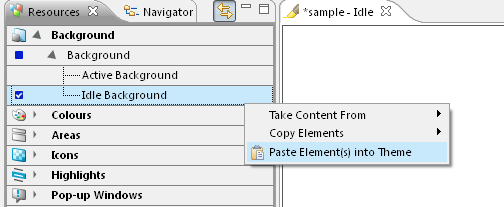

Pasting Elements to the
Resources View
Once a set of component have been copied from a theme they can be
pasted into another theme from the Resources view’s context
menu
by selecting Paste Elements (into) Theme, as shown in below figure.
This pastes all the elements in the set of elements copied from the
other theme, regardless of the selected item in the Resources view.
